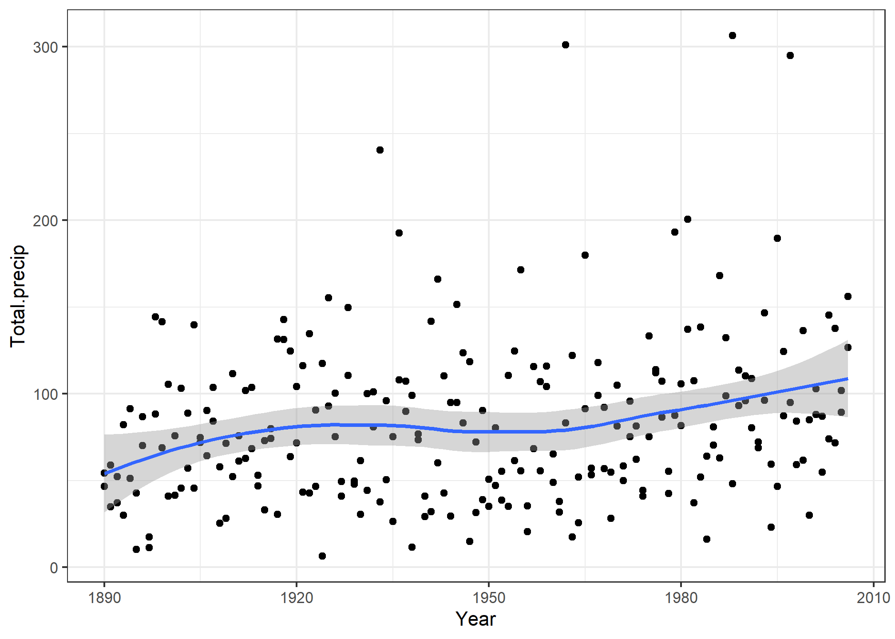
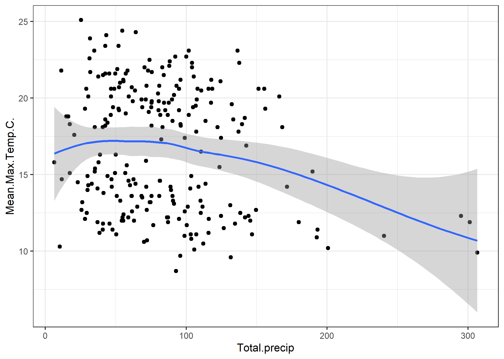

1 Lab 1 — September 20
1.1 Question 1
1.1.2 Read in the data
weather <- read_csv("./data/ottawa-all-monthly.csv")
head(weather)## # A tibble: 6 x 9
## Date.Time Year Month Mean.Max.Temp.C. Mean.Min.Temp.C. Mean.Temp.C.
## <date> <dbl> <chr> <dbl> <dbl> <dbl>
## 1 1889-11-01 1889 11 4.6 -2.2 1.2
## 2 1889-12-01 1889 12 -1.7 -9.6 -5.7
## 3 1890-01-01 1890 01 -4.2 -15.5 -9.9
## 4 1890-02-01 1890 02 -3.7 -13.9 -8.8
## 5 1890-03-01 1890 03 -0.3 -9.3 -4.8
## 6 1890-04-01 1890 04 9.9 -1.2 4.4
## # ... with 3 more variables: Total.Rain.mm. <dbl>, Total.Snow.cm. <dbl>,
## # Total.Precip.mm. <dbl>1.1.3 Inspect the data
dim(weather)## [1] 1405 9
nrow(weather)## [1] 1405
ncol(weather)## [1] 9
names(weather)## [1] "Date.Time" "Year" "Month" "Mean.Max.Temp.C."
## [5] "Mean.Min.Temp.C." "Mean.Temp.C." "Total.Rain.mm." "Total.Snow.cm."
## [9] "Total.Precip.mm."## [1] 91.1.4 September
September <- weather %>%
filter(Month == "09")
1.2 Question 2
1.2.1 October
October <- weather %>%
filter(Month == "10")1.2.2 Combine September and October
SeptOct <- bind_rows(September, October)
dim(SeptOct)## [1] 234 91.2.3 Select columns
SeptOct <- SeptOct %>%
select(Year, Month, Mean.Max.Temp.C., Mean.Min.Temp.C., Total.Rain.mm., Total.Snow.cm.)1.2.4 Make new variable
SeptOctnew <- SeptOct %>%
mutate(Total.precip = Total.Rain.mm. + Total.Snow.cm.*10)1.2.5 Make plots
1.2.5.2 Plot 2
ggplot(SeptOctnew, aes(x=Year, y=Total.precip))+
geom_point()+
geom_smooth(method = "loess", formula = y ~ x)
1.2.6 New plot
ggplot(SeptOctnew, aes(x=Total.precip, y=Mean.Max.Temp.C.))+
geom_point()+
geom_smooth(method = "loess", formula = y ~ x)